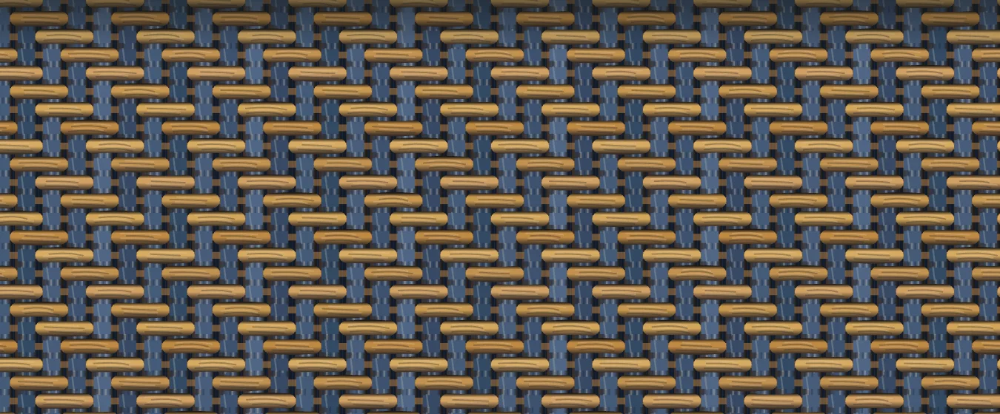

Design vault.
It could really be anything,
but it has to be something.
Plate 001Interactive study
Geological instrument
Open study ↗Faultline
Plate 002Interactive study

Fluorescence study
Open study ↗Night Cabinet
Plate 003Interactive study

Weaving study
Open study ↗